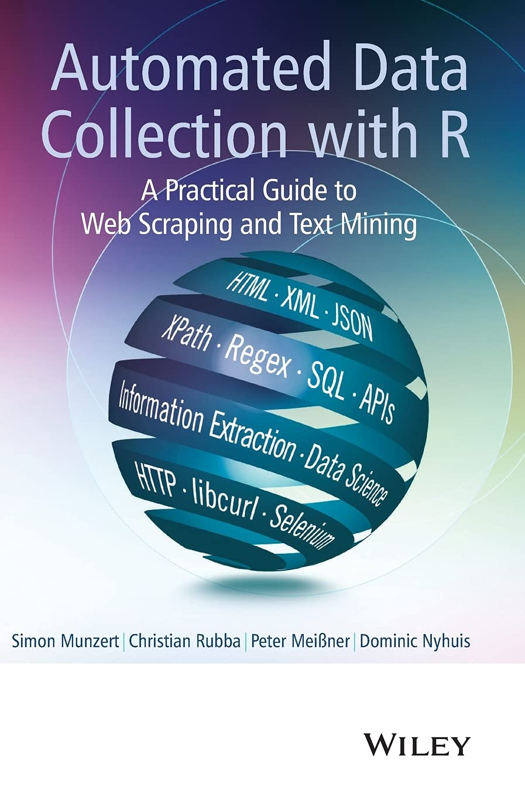

flowchart LR A(URL)-- "read_html(URL)" --> B(HTML file) B -- "rvest/regex" --> C(Data) B -- "rvest" --> D(list of URLs)
Automated Web Data Collection
Day 1
Cornelius Erfort
Witten/Herdecke University
April 24, 2026
About me 👋
- Post-doctoral Researcher
- Witten/Herdecke University
- Focus on computational social science and political behavior
- Part of zweitstimme.org project
About you
- Experience with R vs. Python?
- Experience with agentic coding (e.g. Claude Code, Cursor, GitHub Copilot, etc.)?
- Experience with web scraping?
- If yes: what did you scrape (site/API), and with what tools (e.g.
rvest,chromote/read_html_live(),httr)?
- If yes: what did you scrape (site/API), and with what tools (e.g.
Why Web Scraping?
- Access to unique and innovative data sources
- Create original datasets that do not exist in ready-to-use form
- Large amounts of data openly accessible
- Different content types (e.g. text, metadata, images)
- Complementing traditional research methods
Research Examples (1/3)
- ⓘ #No2Sectarianism: Experimental Approaches to Reducing Sectarian Hate Speech Online (Siegel & Badaan 2020)
- ⓘ Banned: How Deplatforming Extremists Mobilizes Hate in the Dark Corners of the Internet (Mitts 2021)
- ⓘ Controlling the Airwaves: Incumbency Advantage and Community Radio in Brazil (Boas & Hidalgo 2011)
- ⓘ Place-Based Campaigning: The Political Impact of Real Grassroots Mobilization (Bischof & Kurer 2023)
- ⓘ I Get By with a Little Help from My Friends: Leveraging Campaign Resources to Maximize Congressional Power (Box-Steffensmeier et al. 2020)
Research Examples (2/3)
- ⓘ Electoral Accountability and Particularistic Legislation: Evidence from an Electoral Reform in Mexico (Motolinia 2021)
- ⓘ Defund My Police? The Effect of George Floyd’s Murder on Support for Local Police Budgets (Sances 2023)
- ⓘ Hot topics: Denial-of-Service attacks on news websites in autocracies (Lutscher 2021)
- ⓘ The PARTYPRESS Database (Erfort, Klüver & Stötzer 2023)
- ⓘ Turnout and Amendment Four: Mobilizing Eligible Voters Close to Formerly Incarcerated Floridians (Morris 2021)
Research Examples (3/3)
- ⓘ How the refugee crisis and radical right parties shape party competition on immigration (Gessler & Hunger 2022)
- ⓘ Why Botter: How Pro-Government Bots Fight Opposition in Russia (Stukal et al. 2022)
- ⓘ Public Service Decline and Support for the Populist Right: Evidence from England’s National Health Service (NHS) (Dickson, Hobolt, De Vries & Cremaschi forthcoming)
- ⓘ The Police as Gatekeepers of Information: Immigration Salience and Selective Crime Reporting (Elshehawy et al. 2025)
Workshop Goals
- Basics of web scraping
- Explore different methods of webscraping
- Learn about practical applications of web scraping
- Build a reproducible scraping pipeline
- Understand the role of AI agents in scraping workflows
What’s new in 2026: AI-assisted scraping
- AI tools have improved significantly
- They can now often draft a working scraper quickly, propose selectors/regex, and iterate on errors.
- This workshop still focuses on understanding the web (HTML, APIs, dynamic content).
Organizational Points
- Workshop logistics
- Github
- Cheat Sheet: https://cornelius-erfort.github.io/automated-web-data-collection-2026/cheatsheet/cheatsheet.html
https://github.com/cornelius-erfort/automated-web-data-collection-2026
GitHub (quick intro)
- GitHub hosts the course repository with slides, exercises, and helper materials.
- To follow along smoothly, keep a local copy on your computer.
- Recommended: clone the repo (
git clone ...) so updates are easy to pull. - Alternative: download the ZIP and save it in a folder for this workshop.
https://github.com/cornelius-erfort/automated-web-data-collection-2026
Resources (1/2)
Munzert, S., Rubba, C., Meißner, P., & Nyhuis, D. (2014). Automated Data Collection with R: A Practical Guide to Web Scraping and Text Mining. Wiley.

Resources (2/2)
Wickham, H., & Grolemund, G. (2023). R for Data Science (2nd Edition). O’Reilly Media.

Timeline (1/2)
Day 1 Topics
- Web data decision framework: HTML vs API vs dynamic content
- HTML and CSS essentials for scraping with
rvest - API fundamentals: query parameters, pagination, and responses
- Build a minimal reproducible scraper workflow
- Data quality checks before analysis
- Applied exercise block
Timeline (2/2)
Day 2 Topics
- Dynamic pages and browser automation (when and how)
- Robust scraping: retries, logging, and anti-fragile selectors
- Workflow operations: file management, scheduling, and monitoring
- Ethics and legal practice for responsible collection
- AI-assisted scraping with verification guardrails
- Applied exercise block
Questions
- Any questions?
- Feel free to interrupt me at any point
Where Can Web Data Come From?
- Raw websites (HTML): content in page elements, links, and tables
- APIs: structured responses (often JSON) designed for data exchange
- Datasets/downloads: files like CSV, Excel, PDF, or ZIP provided on websites
- In practice, we first identify the source type, then choose the right collection strategy.
How is Data Ordered on the Web?
- We need to have a basic understanding of how websites work.
- If we can read that structure, we can reliably target and extract the right pieces of information.
- So before scraping at scale, we start with the basics of HTML and CSS selectors.
HTML and Web Structure
HTML
- HyperText Markup Language
- Building blocks of most websites
- Defines the structure and content of a webpage
- Uses tags to define elements (e.g. headings, paragraphs, links, images)
- Tags are enclosed in angle brackets (e.g.
<tagname>content</tagname>) - Tags can have attributes (e.g.
<img src="image.jpg" alt="description">) - Also helps us find the information we want!
HTML Syntax
HTML Syntax
<html>
<head>
<title>The World Wide Web project</title>
</head>
<body>
<h1>World Wide Web</h1>
<p>The WorldWideWeb (W3) is a wide-area hypermedia information retrieval initiative.</p>
<h2>What's out there?</h2>
<ul>
<li><a href="/hypertext/DataSources/Top.html">Pointers to online information</a></li>
<li><a href="/hypertext/WWW/Help.html">Help</a> on the browser you are using</li>
<li><a href="/hypertext/WWW/Status.html">Software products</a></li>
</ul>
<p><a href="/hypertext/WWW/People.html">People</a> | <a href="/hypertext/WWW/History.html">History</a> | <a href="/hypertext/WWW/FAQ/List.html">FAQ</a></p>
</body>
</html>- Open in browser: HTML example (plain)
From Structure to Design
- What if we want to add color etc.?
- This makes updates hard.
- Design usually follows rules (e.g. body text gray, headings blue, links underlined).
- We need a language to define these design rules separately.
- Result: cleaner code, easier maintenance, and faster redesigns.
- Open in browser: HTML example (styled)
CSS
- Cascading Style Sheets
- Used to style HTML elements
- Defines how HTML elements should be displayed on the screen
- Can be used to change colors, fonts, layouts, and more
- CSS rules consist of selectors and declarations
- Selectors target HTML elements, and declarations define the styles to be applied
- Same logic helps us find the information we want!
Using CSS in HTML
<html>
<head>
<link rel="stylesheet" href="mystyle.css">
</head>
<body>
<h1 id='first'>A heading</h1>
<p class = "main-text">Some text & <b>some bold text.</b></p>
<p>This is a <a href="https://www.google.com" class = "important-link">Link</a></p>
<div>
<p id = "twitter">Follow us on Twitter.</p>
</div>
</body>CSS Syntax
CSS path
elementsare referred to by their name, e.g.p
- Elements within other elements can be referred to:
div p
- The
classattribute is referred to with a dot, e.g..important-link
- The
idattribute is referred to with a hash, e.g.#twitter
CSS Diner
10-15 min (including break)
View the source code in the browser
Abgeordnete (Berliner Parlament)
https://www.parlament-berlin.de/das-parlament/abgeordnete/alphabetische-suche
View the source code in the browser
Selector Gadget
10-15 min to install
CSS paths for the two examples
- Abgeordnete (Berliner Parlament) →
.has-icon-file - Political scientists on Wikipedia →
h2+ ul li > a:nth-child(1)
From Page Structure to Data Extraction in R
- We now know how to inspect HTML and identify CSS selectors.
- Next step: use R packages to parse/load pages and extract the elements we want.
- Workflow:
read_html()-> select elements -> extract text/attributes -> build dataset. - Cheat sheet for R scraping: https://cornelius-erfort.github.io/automated-web-data-collection-2026/cheatsheet/cheatsheet.html
Package xml2
read_html()
read_html("http://rvest.tidyverse.org/")
read_html("myfiles/myhtml.html")
Package rvest
html_elements(html, css = "your css path")gives you the elements that fit to your css path
html_text2(html)gives you the content/text of the elements
html_attr(html, name = "name of the html attribute")gives you the values/texts of the html attribute
Exercise 1: HTML
- Time: 15-20 minutes
- Where in GitHub:
exercises/01-html.R - Goal: inspect webpage and extract elements with CSS selectors
- Steps:
- Open
exercises/01-html.R - Run the starter code and inspect the page structure
- Write selectors and extract text/attributes
- Compare your output with your neighbor
- Open
Scraping HTMLs
What we did so far:
- Download single HTML
- Extract data from HTML
But:
- Data is often on multiple pages
Basic HTML web scraping workflow
First step
or
flowchart LR A(URL)-- "manually" --> B(URL pattern) B -- "str_c(URL, pattern)" --> C(list of URLs)
Manipulating URLs
- Often, the URLs for the HTMLs we need follow a pattern:
https:///website.com/page/1, https:///website.com/page/2, …
- We can use
stringrto create a vector of URLs we want to download.
[1] "https:///website.com/page/1" "https:///website.com/page/2"
[3] "https:///website.com/page/3" "https:///website.com/page/4"
[5] "https:///website.com/page/5" "https:///website.com/page/6"
[7] "https:///website.com/page/7" "https:///website.com/page/8"
[9] "https:///website.com/page/9" "https:///website.com/page/10"Manipulating URLs
Collecting links from HTML
- We can use
rvestto extract links from HTMLs (href attribute)
# Download the page that lists recent press releases
myhtml <- read_html("https://labour.org.uk/category/latest/press-release")
# Select all relevant link elements with a CSS selector
myelements <- html_elements(myhtml, ".post-preview-compact__link")
# Extract the href attribute (relative URLs)
links <- html_attr(myelements, "href")
# Turn relative paths into absolute URLs
links <- str_c("https://labour.org.uk", links)
# Check the first few collected links
head(links, 5)[1] "https://labour.org.uk/updates/press-releases/keir-starmer-speech-change-be-part-of-it/"
[2] "https://labour.org.uk/updates/press-releases/keir-starmer-launches-change-labours-general-election-manifesto/"
[3] "https://labour.org.uk/updates/press-releases/keir-starmer-a-stronger-safer-more-secure-britain-speech/"
[4] "https://labour.org.uk/updates/press-releases/keir-starmer-speaking-at-the-launch-of-labours-six-steps-in-glasgow/"
[5] "https://labour.org.uk/updates/press-releases/keir-starmer-speech-at-labours-six-steps-for-change-in-wales/" How do we download multiple HTMLs?
- For loop
- (
sapply()) - (While loop)
For loop
For loop
# Create a local folder once to store downloaded pages
if(!dir.exists("labour")) dir.create("labour")
for (link in head(links)) {
# Build a filename from the URL slug
filename <- str_c("labour/", basename(link), ".html")
# Skip if this page was already downloaded
if(file.exists(filename)) next
print(filename)
# Download page HTML and save it locally
myhtml <- read_html(link)
write_html(myhtml, file = filename)
# Pause briefly to avoid overloading the server
Sys.sleep(1)
}[1] "labour/keir-starmer-speech-change-be-part-of-it.html"
[1] "labour/keir-starmer-launches-change-labours-general-election-manifesto.html"
[1] "labour/keir-starmer-a-stronger-safer-more-secure-britain-speech.html"
[1] "labour/keir-starmer-speaking-at-the-launch-of-labours-six-steps-in-glasgow.html"
[1] "labour/keir-starmer-speech-at-labours-six-steps-for-change-in-wales.html"
[1] "labour/revealed-the-conservatives-71-billion-worth-of-reckless-spending-will-lead-to-interest-rate-rises.html"Pause R
For loops create a lot of traffic:
Sys.sleep(seconds)pauses R for the specified time- Be polite and pause for one or two seconds
Manage files
- The number of HTMLs can grow really fast.
- We don’t want to start from the beginning with every error.
- Best practice: Save HTMLs to a local folder.
Manage files
list.files(folder, full.names = TRUE)returns a vector with all files (and folders in the folder)file.exists(file)returns TRUE when the file exists, otherwise FALSEdir.create(folder)creates the folderdir.exists(folder)returns TRUE when the folder exists, otherwise FALSE
Manage files
Useful functions
if(condition) expression, if condition: only runs expression if condition is TRUE!Logical NOT operator, inverts a logical (TRUE->FALSE,FALSE->TRUE)vector_1 %in% vector_2operator to check whether the elements fromvector_1are invector_2messageprints a message in the console
Exercise 2: Web Scraping
- Time: 20-25 minutes
- Where in GitHub:
exercises/02-webscraping.R - Goal: scrape pages, store HTMLs, and combine info
- Steps:
Open
exercises/02-webscraping.RBuild or inspect the URL list you need to scrape
Loop over pages with a polite pause (
Sys.sleep)Save files locally and skip existing files
Extract and combine key fields into one tidy table
Beyond HTML: Other Web Data Sources
- Data is not always in visible HTML elements.
- Common alternatives:
- APIs (often JSON)
- Direct files (CSV, XLSX, PDF, ZIP)
- Other formats (XML, GeoJSON, feeds)
- First identify the source type, then choose the right method.
- Next, we focus on APIs as a fast and robust option.
APIs
- Efficient and structured way to provide data
- Application Programming Interfaces
- (“Hidden” APIs)
APIs
- Standardized way to request data
- API returns only the requested data
- Some APIs are free
- Some APIs require authentication
Example API
API Query Parameters
latitude: The latitude of the location for which you want weather data (e.g.,
54.09)longitude: The longitude of the location (e.g.,
12.14)start_date: The beginning date for the data (format:
YYYY-MM-DD)end_date: The end date for the data (format:
YYYY-MM-DD)daily: The daily variable(s) you want, e.g.,
temperature_2m_maxYou can change these parameters to get data for different locations, dates, or variables.
API Query Parameters
API response example
{"latitude":54.100006,
"longitude":12.100006,
"generationtime_ms":0.27310848236083984,
"utc_offset_seconds":0,
"timezone":"GMT",
"timezone_abbreviation":"GMT",
"elevation":13.0,
"daily_units":
{"time":"iso8601",
"temperature_2m_max":"°C"},
"daily":
{"time":
["2020-05-16","2020-05-17","2020-05-18","2020-05-19","2020-05-20"],
"temperature_2m_max":
[14.0,16.4,13.6,16.0,15.1]}}APIs: More examples
- Geographic coordinates
- Twitter data
- Uber price estimation
Hidden APIs
- Many websites load data from APIs in the background.
- You can often find these calls in browser DevTools (
Network->Fetch/XHR). - Advantage: cleaner and more structured data than scraping rendered HTML.
- Typical workflow:
- Open page and inspect
Networkrequests - Find endpoint, parameters, and required headers
- Reproduce request in R (
httr::GET()) - Parse response (
jsonlite::fromJSON())
- Open page and inspect
APIs more examples
List of free APIs

R packages for APIs
- Often R packages make it easier to use APIs in R
List of R packages
https://gist.github.com/zhiiiyang/fc19995f7e350f3c7fb940757f6213cf#file-apis-md
File formats
Which file formats do we need to know?
- XML
xml2::read_xml() - CSV
readr::read_csv() - XLSX
openxlsx::read.xlsx() - JSON
But also:
- JPG etc.
JSON
- Data are stored in key-value pairs:
{"key": "value"} - JSON is hierarchical, unlike tables/dataframes
- Curly brackets
{}define objects (unordered) - Square brackets
[]define arrays (ordered)
JSON: Objects vs Arrays
JSON Example
{"indy movies" :
[
{
"name" : "Raiders of the Lost Ark",
"year" : 1981,
"actors" : {
"Indiana Jones": "Harrison Ford",
"Dr. Rene Belloq": "Paul Freeman"
},
"producers": ["Frank Marshall", "George Lucas", "Howard Kazanjian"],
"budget" : 18000000,
"academy_award_ve": true
},
{
"name" : "Another Movie"
}
]
}JSON in R
$`indy movies`
name year actors.Indiana Jones actors.Dr. Rene Belloq
1 Raiders of the Lost Ark 1981 Harrison Ford Paul Freeman
2 Another Movie 1999 <NA> <NA>Hierarchical data
- Our analysis tools (dataframes, models, plots) usually expect rectangular data.
- JSON is often hierarchical: nested objects, arrays, lists.
- Problem: there is no single automatic “correct” flattening.
- We need to decide what should become:
- columns (attributes of one unit),
- rows (repeated units),
- separate tables (one-to-many relationships).
- Typical tools:
- add columns:
tidyr::unnest_wider() - add rows:
tidyr::unnest_longer()
- add columns:
Hierarchical data
- Practical workflow:
- Parse JSON (
jsonlite::fromJSON()orjsonlite::parse_json()) - Inspect structure (
str(),names()) - Flatten step by step with
tidyr - Check that rows still represent the intended unit of analysis
- Parse JSON (
- Core packages:
jsonliteandtidyr
Exercise 3: APIs and Data Formats
- Time: 20-25 minutes
- Where in GitHub:
exercises/03-apis.R - Goal: request API data, parse JSON, and transform nested output into rectangular data
- Steps:
- Open
exercises/03-apis.R - Build and run an API request URL
- Parse response with
jsonlite - Export a clean table for analysis
- Open
Outlook: Day 2
- Dynamic content (JavaScript-rendered pages): when
rvestis not enough - Browser automation with
rvest::read_html_live()(headless Chrome viachromote) - HTTP requests with
httr(often faster than browser automation) - Robust workflows: retries, logging, and scheduling
- Ethics and legal practice for responsible collection
See you tomorrow
- Bring your project idea (or pick one from the examples)
- Make sure your setup still works (R + browser dev tools)
Thank you!